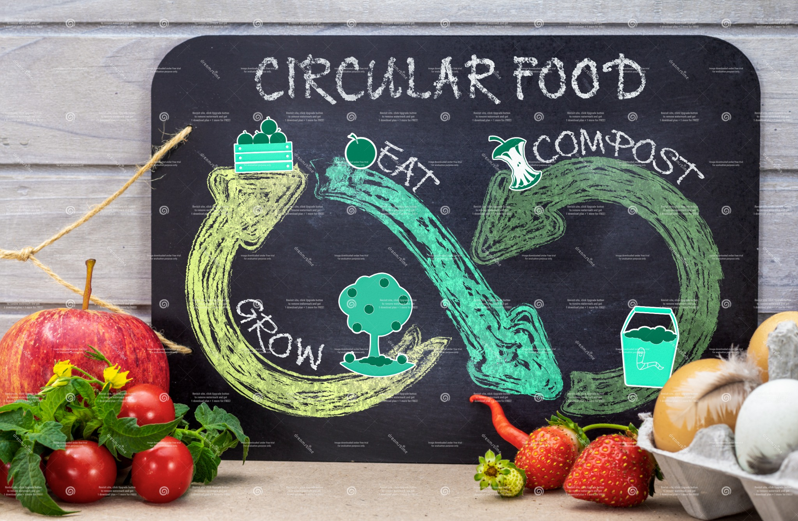
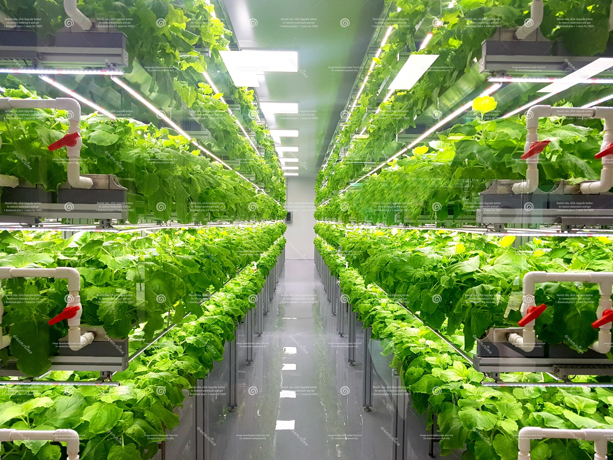

Barriers & Solutions

Barriers
- Access: transportation gaps & food deserts.
- Cost: fresh food can be expensive.
- Awareness: programs not well-known.
- Stigma: asking for help feels hard.
- Waste: surplus food not redirected.

Solutions
- Mobile markets & pantry delivery.
- Double-up benefits for fruits/veggies.
- Clear guides to SNAP/WIC & school meals.
- Normalize help via community events.
- Food rescue partnerships & composting.
Success reduces hunger, improves health and learning, and cuts methane from landfills.